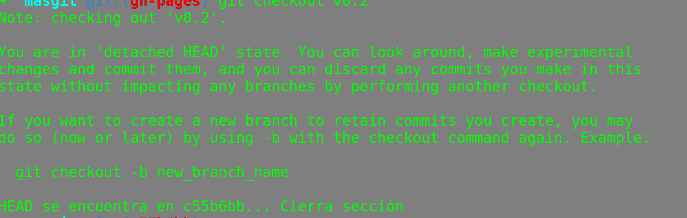
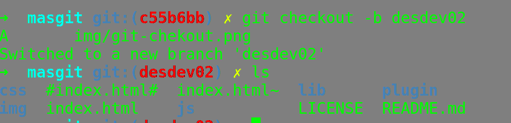
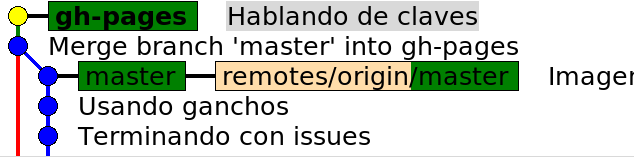
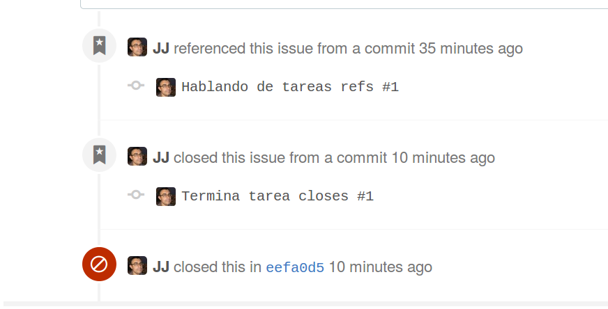

@oslugr
fb.com/SoftwareLibreUGR
Grupo de Telegram
Get a job!


git tag -a v0.1
-m "Tageando para el postureo"
git tag -a v0.1
-m "Tageando para el postureo"

git checkout v0.2

git checkout v0.2git checkout -b desdev02

git checkout -b desdev02Creando releases
git push --tags
git push --tagsOops
git reset --hard HEAD~1
git reset --hard HEAD~1Releases == hitos == Milestones
Un hito se organiza en tareas
commit→tarea
git commit -am "Hablando de tareas refs #1"
git commit -am "Hablando de tareas refs #1"Commit ⚷ issue
Settings →
Webhooks & services→
Add Service
Los hooks hacen cosas cuando se hacen cosas.
pull, push, commit...
cd .git/hooks
mv commit-msg.sample commig-msg
chmod +x commit-msg
cd .git/hooks
mv commit-msg.sample commig-msg
chmod +x commit-msg #!/bin/sh
SOB=$(git var GIT_AUTHOR_IDENT | sed -n 's/^\(.*>\).*$/Signed-off-by: \1/p')
grep -qs "^$SOB" "$1" || echo "$SOB" >> "$1"
# This example catches duplicate Signed-off-by lines.
test "" = "$(grep '^Signed-off-by: ' "$1" |
sort | uniq -c | sed -e '/^[ ]*1[ ]/d')" || {
echo >&2 Duplicate Signed-off-by lines.
exit 1
}